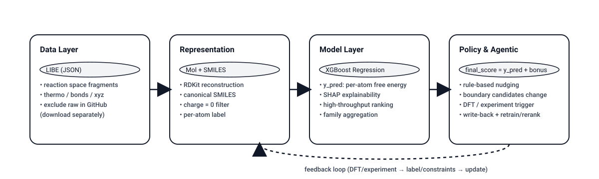
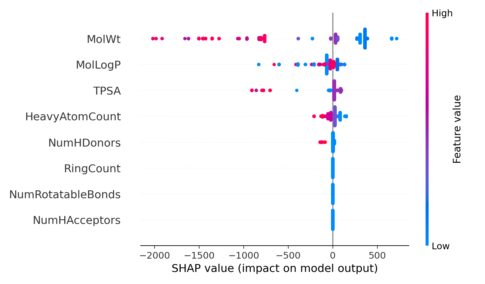

Overview
總覽
這是一個 靜態展示頁（GitHub Pages），用來說明 LIBE
Demo 的流程、輸出與後續如何走向 Agentic AI。
本頁內容僅讀取 docs/data/ 與 docs/assets/ 的輸出檔案。
Demo 目標
- R&D 決策支援：候選篩選、排序與可解釋性。
- Policy（Rule）層：在模型排序上疊加決策偏好。
- Agentic 延伸：觸發 DFT / 實驗、寫回標籤並迭代。
系統層級流程：Data → Representation → Model → Policy → Agentic

Quickstart
快速開始
環境需求
- Python 3.10+（建議 3.10/3.11）
- Git（可改用 ZIP 下載）
- LIBE dataset（repo 不含 raw 檔案）
資料放置
下載 LIBE 後請放到：
data/raw/libe.jsonWindows（PowerShell）
- 首次執行如果被擋，請參考下方的 PowerShell 解鎖說明。
- 建立環境與安裝依賴：
.\setup.ps1- 依序執行 pipeline：
.\run_all.ps1PowerShell 顯示「已停用指令碼執行」怎麼辦？
在同一個視窗先執行：
Set-ExecutionPolicy -ExecutionPolicy RemoteSigned -Scope CurrentUser若檔案被封鎖可解除：
Unblock-File .\setup.ps1
Unblock-File .\run_all.ps1macOS / Linux（bash）
若不使用 PowerShell，可手動執行：
python -m venv .venv
source .venv/bin/activate
python -m pip install -U pip
python -m pip install -r requirements.txt
# run scripts
python src/00_inspect_libe.py
python src/00b_inspect_nested.py
python src/01_build_table.py
python src/02_train_rank.py
python src/03_explain_and_export.py
python src/04_family_ranking.py
python src/05_rule_feedback_retrain.py輸出位置
模型輸出：
data/outputs/本頁展示資料：
docs/data/
docs/assets/Data & Label
資料與標籤
為何 LIBE 不能直接當「穩定電解液」清單？
- LIBE 可能含有碎片（H2、LiH）或 radical 物種。
- 因此需要重建結構（elements + bonds → RDKit Mol → SMILES）並做語意篩選（如 charge=0）。
為何使用 per-atom free energy
若直接使用 total free energy，較大分子會被放大影響，難以反映結構本身差異。 因此改用 per-atom：
free_energy_per_atom = free_energy_eV / number_atoms這樣模型更聚焦在「化學結構差異」，而非尺寸大小。
Model & Explainability
模型與可解釋性
模型任務
- 模型：XGBoost Regressor
- 輸入：RDKit descriptors（MolWt、TPSA、MolLogP、Donors/Acceptors、HeavyAtomCount...）
- 輸出：per-atom free energy 預測值
y_pred
SHAP Summary

Top explanations（示例）
載入 docs/data/top5_explanations.csv：
欄位包含：rank、id、smiles、y_pred、top_features（以 SHAP 顯示特徵貢獻）。
Family Ranking
Family-level 排名（避免相似分子佔榜）
LIBE 可能含有大量相似分子。若只看單筆排序，容易出現家族重複上榜， 因此引入 family 概念（例如元素簽名 C-F-N-S）。
Family ranking（before feedback）
Family ranking（after feedback / retrain）
如何閱讀 family 表
best_y_pred：該 family 內最佳預測值。count：該 family 的候選數量。feedback_hits：符合 rule/policy 的樣本數。
Policy & Agentic
Policy Re-ranking 與 Agentic Roadmap
Policy Re-ranking 的目的
模型層回答「物性排序」，但實際決策還需要溶解性、成本與偏好等。 因此透過 Policy（Rule）層 進行微調，而非完全推翻模型。
最終決策分數
final_score = y_pred + policy_bonusPolicy 影響摘要（1-in / 1-out）
載入 docs/data/policy_rerank_summary.csv：
觀察
added_count / removed_count 的變動，評估 policy 的影響力。
Top20：after feedback（model）
Top20：rule reranked（final decision）
Agentic Roadmap（建議落地路線）
- Policy 篩選：rule rerank 取 top-K 做為送測清單。
- 觸發外部工具：Agent 呼叫 DFT workflow / 實驗系統。
- 回寫結果：將 DFT/實驗結果轉為標籤或約束。
- 更新模型與 policy：重訓或再排序，逐步優化。
- 形成閉環：週期性迭代並留下 audit trail。
關鍵訊息（對外展示）
好的決策系統需要可追溯與穩定迭代。本 Demo 以 policy 做「微調」而非推翻，展現 1-in / 1-out 的可解釋變動。